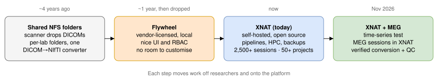
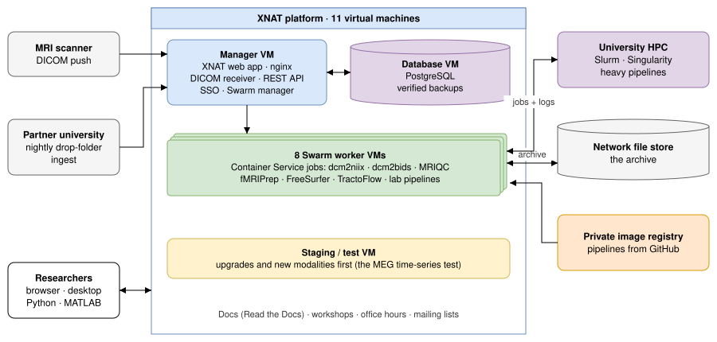
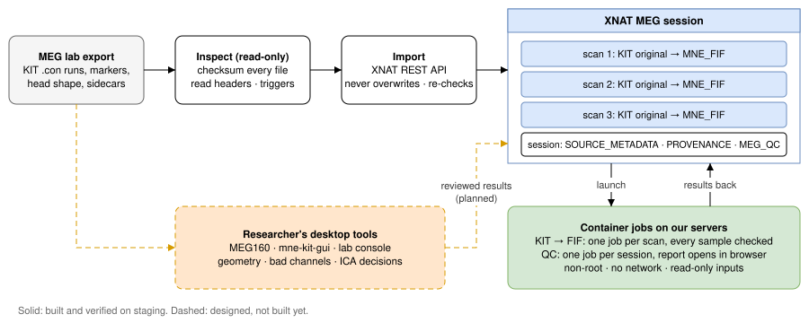
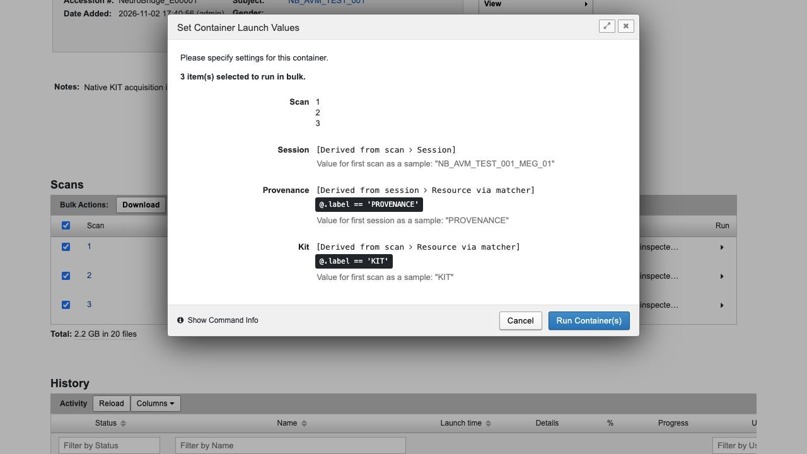
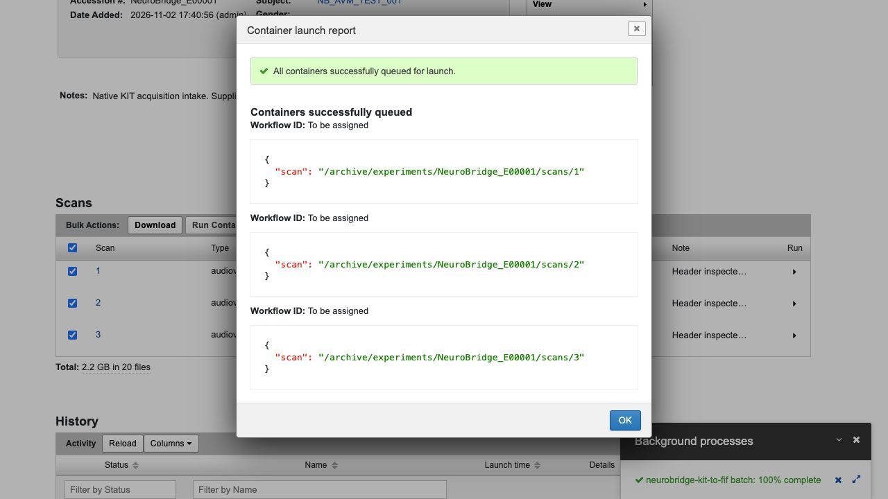
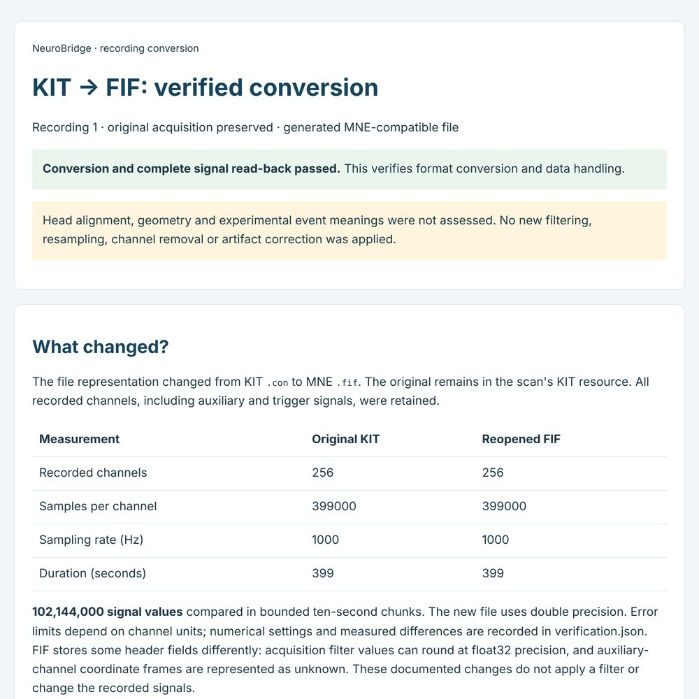
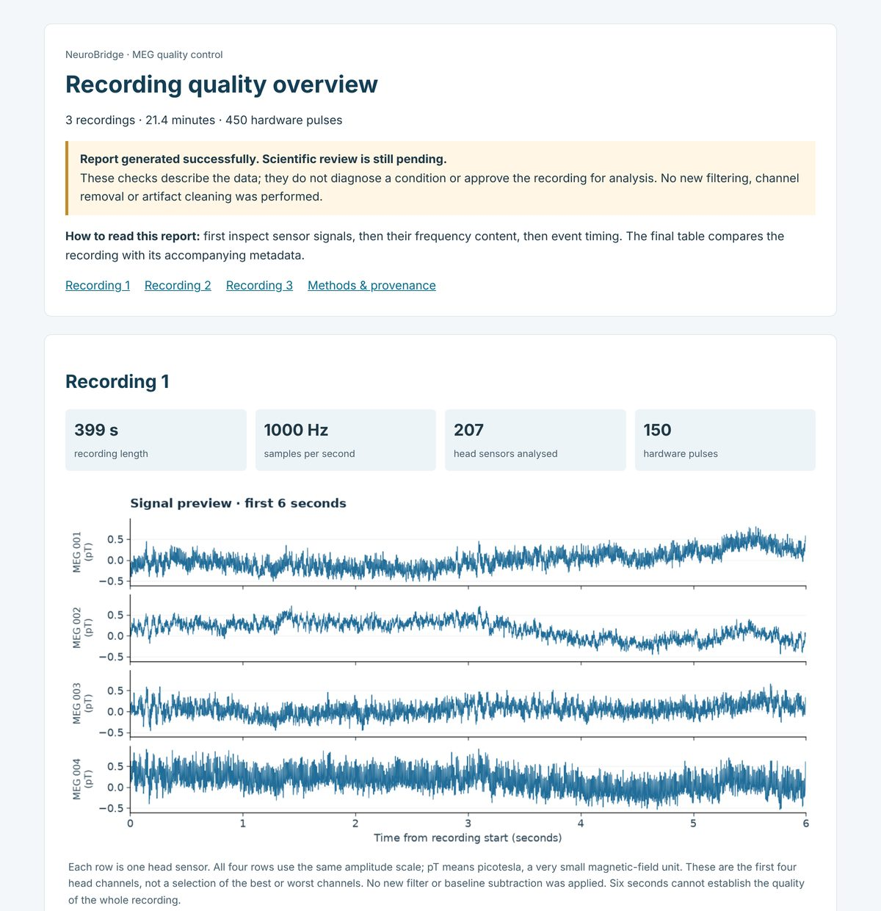

- Docs
- Multimodal XNAT at CBH
Making the Center for Brain and Health's data platform multimodal
XNAT is the open-source data platform behind NYU Abu Dhabi's Center for Brain and Health (CBH). Data from the Center's MRI scanner is stored, organised and processed there, all the way to analysis-ready BIDS, and I run it. This page shows how the center got here, and a working test that brings MEG recordings into the same platform: the step from images to neural time series.

| Stage | What researchers had | What was missing |
|---|---|---|
| Shared NFS folders (about four years ago) | DICOMs dropped into per-lab folders, plus one folder that converted DICOM to NIfTI | Everything else: downloading, organising, moving to the HPC, processing |
| Flywheel (about a year, then discontinued) | A locally hosted, vendor-licensed platform with a good interface, access control and simple pipelines | Room to customise. We needed a BIDS workflow and lab-specific features that we couldn't build ourselves on a closed platform |
| XNAT (today) | Self-hosted and open source: role-based access, archiving, backups, pipelines, HPC integration, and the freedom to build whatever a lab needs, BIDS included | Only MRI. Other modalities still live outside it |
1. The MRI platform¶
When I joined, XNAT was being set up and tested, and it didn't really work yet. Getting it to something every lab can depend on has been my main job since: ingestion, access, pipelines, reliability, docs and training.
What researchers get¶
- Scans arrive from the scanner directly, organised by project, subject and session, behind university sign-on.
- BIDS data stored inside XNAT, so getting analysis-ready data takes two steps instead of seven.
- Pipelines from the browser (dcm2niix, dcm2bids, MRIQC, fMRIPrep, FreeSurfer, TractoFlow), on one session or many, with heavy jobs sent to the HPC.
- Downloads by browser, desktop client, Python or MATLAB, all covered in the public user manual.
- Workshops, one-to-one training and office hours.
Architecture¶

What I contributed to¶
| Area | My contribution |
|---|---|
| Workflow first | Followed five researchers' real workflows, then dropped a planned one-size-fits-all CLI for Python templates on XNAT's API and the stock desktop client |
| BIDS | Replaced a chain of tools, mappings and HPC copies with a BIDS tree stored inside XNAT. Seven steps became two |
| Pipelines | Code in GitHub with docs, one private image registry for all workers, and fixed Slurm scripts, so every lab runs the same tested pipeline the same way, on the HPC when it needs to |
| Reliability | Verified backups, monitoring and recovery runbooks, so the platform just runs and researchers can stop worrying about it |
| Network | Worked with central IT for months to restore every upload and download path, then enabled the desktop client |
| Second site | A partner university's new scanner drops zipped scans in a shared folder, and a nightly service validates and archives them with no manual steps |
| Quality checks | Validation for a national normative brain-imaging cohort, with a nightly dashboard research assistants use to fix issues |
2. Time-series test: adding MEG¶
The center's MEG lab, NeuroWaves, keeps its recordings outside the platform. They are copied from the acquisition PC to NYU Box by hand. To see whether the MRI engineering carries over to time-series data, I archived and processed one real KIT recording (3 runs, 256 channels, 1 kHz) on a separate test copy of our XNAT.
How a recording moves¶

What it showed¶
- Intake that proves itself. XNAT already supports MEG sessions; they just had to be switched on. All 23 files were checksum-verified where XNAT stored them, and re-running the import changed nothing.
- The metadata was wrong. The sidecar said 1 s, 275 + 23 channels and 3 events per run. The recordings ran 399–467 s, with 256 channels and 150 trigger pulses each. I kept the originals and recorded the differences.
- Conversion per scan, like dcm2niix. Tick scans, and XNAT launches one KIT → FIF job each. The worker reopens the FIF and compares every sample with MNE's reading of the original: 328,704,000 values matched exactly.
- QC in the browser. A session report of signals, spectra, triggers and metadata checks. Reruns are identical, and a failed run leaves the last good report in place.




The lab's MEG scientist pointed out that there is no single correct KIT-to-FIF conversion, and that steps like head alignment, bad-channel and ICA review need a researcher in a desktop GUI. So the conversion here is signal-only on purpose. In the planned design, researchers keep their own tools and their reviewed results come back to XNAT as clearly labelled external results, saved against the exact inputs they were made from.
Status¶
| Built and verified | Designed, not built | Not attempted |
|---|---|---|
| Native MEG sessions in XNAT | Drop folder + "ready" manifest + watcher | Head-geometry review, source analysis |
| Hash-verified, safe-to-rerun intake | Researcher results returned to XNAT | Task-averaged responses |
| Per-scan KIT → FIF with full read-back | BIDS export as its own resource | Live or real-time acquisition |
| Session QC report, job history and logs |
3. What carries over¶
EEG, intracranial EEG, single units, TMS and electrical stimulation share the problems this test was about: continuous recordings, events to verify, metadata in separate files, and decisions only a scientist can make.
- One backbone for many modalities. Explicit completion signals, identity from hashes, originals untouched, and BIDS (including iEEG-BIDS and NIBS-BIDS) as validated outputs.
- Every result traceable. Inputs, code and container image recorded for each output; failures never overwrite the last good result.
- Human review as data. Decisions saved against exact inputs, so a pipeline can stop when one is missing or stale.
- Privacy by design. Clinical recordings carry identifiers in headers, filenames and head shapes, and renaming a file isn't de-identification.
- Software others can run. Tests, containers, CI and documentation, plus the training that gets people to use it.
When I first joined, it took me about a month to configure XNAT properly and to learn how to debug it and trace issues through the system. With AI coding agents I can now do that kind of setup in a few days, which is how this MEG test came together. The part that still takes time is understanding the system and how people use it. New to me so far: EEG and iEEG acquisition, real-time closed-loop systems and stimulation hardware.
4. Links¶
| NYUAD XNAT user manual | What researchers use day to day: upload, BIDS, pipelines, downloads |
| Manual source (GitHub) | Sphinx source and the nightly cohort validation dashboard |
| NeuroWaves MEG lab docs | The KIT and OPM systems, protocols, data storage |
| NeuroWaves pipeline gallery | The lab's KIT processing stages the MEG test was checked against |
| Center for Brain and Health | The research center behind the platform |
| Rokers Vision Laboratory | A CBH lab whose MRI data runs through the platform |
| Sreenivasan Lab | Another CBH lab working with the platform |
© 2026 Soumen Mohanty. Diagrams drawn in a draw.io style; screenshots from an isolated staging server.